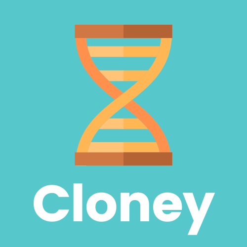

Cloney Official Documentation¶
Have you ever found yourself in the situation where you discover a fantastic template Git repository on GitHub, only to realize that it doesn't quite fit your unique project requirements? You're not alone. Traditional Git templates often leave you with the burden of customizing every detail manually, which can be time-consuming and error-prone. This is where Cloney comes to the rescue.

The Pain of Manual Adjustments¶
Picture this: you stumble upon a promising template Git repository that could kickstart your project. Excited, you fork the repository, but soon, you realize it needs extensive adjustments. You have to replace placeholder values, tweak configurations, and adapt the code to match your project's specifications.
This process can be both frustrating and error-prone. Manually searching and replacing values throughout the codebase can lead to mistakes and inconsistencies. What if you could automate this entire customization process and have a template repository that adapts itself to your needs effortlessly? That's precisely what Cloney is designed to do.
Introducing Cloney Template Repositories¶
Cloney Template Repositories are the heart of Cloney's innovative approach. These repositories are enriched with a special .cloney.yaml metadata file that contains information about the template repository. This metadata file defines variables and configurations, making the template adaptable to various use cases.
With Cloney, you no longer need to manually tweak code, search for placeholders, or worry about consistency. Instead, you can:
-
Define variables within the
.cloney.yamlfile, allowing you to customize different aspects of the template, such as project names, descriptions, and more. -
Use Go templates, a powerful and flexible templating language, to dynamically generate files and directories based on your provided variables.
-
Focus on your project's unique requirements and let Cloney handle the repetitive and error-prone customization tasks.
Key Features of Cloney¶
-
Dynamic Template Customization: Customize templates by defining variables and leveraging Go templates for dynamic content generation.
-
Automation: Eliminate the need for manual adjustments and repetitive tasks when setting up projects based on templates.
-
Consistency: Ensure consistency and reduce errors across projects derived from Cloney Template Repositories.
-
Flexibility: Adapt templates to a wide range of use cases, from code projects to documentation and beyond.
-
Community: Join a growing community of developers and template maintainers who share and collaborate on Cloney Template Repositories.
Getting Started with Cloney¶
Now that you have a glimpse of what Cloney can do, it's time to dive deeper into how to use it effectively. Head over to the Getting Started guide to set up Cloney and begin using it for your Git projects.